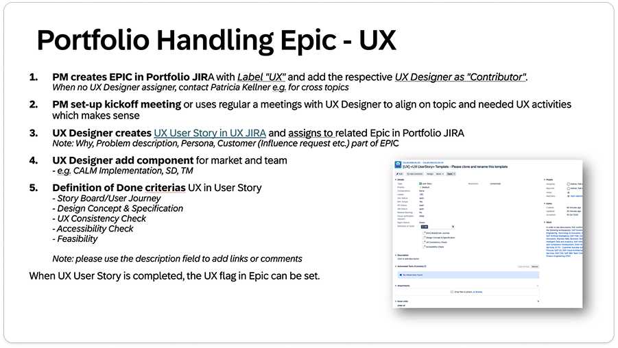
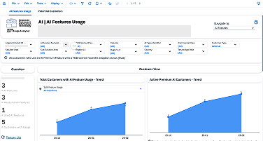

Scaling UX strategy across SAP Cloud ALM
SAP · Cloud ALM · UX Lead · 2022–Present

Design quality at scale is an organisational problem
SAP Cloud ALM serves enterprise IT teams managing complex cloud operations — project tracking, monitoring, change management, and service integration. The product is built by six independent agile scrum teams, each with their own product manager, engineering backlog, and release velocity.
The problem this creates for UX is not a shortage of design skill — it's a co-ordination problem. Each team makes design decisions independently: when to run research, what level of fidelity is appropriate, when to involve design, how to define "done." Without a shared framework, quality becomes inconsistent across the product surface, and UX becomes a reactive service rather than a strategic capability.
My job was to change that — to build the operating infrastructure that gives UX a consistent, defensible role across all six teams without requiring a UX designer in every planning room.
Working inside two enterprise planning frameworks
SAP Cloud ALM's development process runs inside two overlapping planning frameworks: Design-Led Development (DLD) — SAP's internal model for integrating UX into agile delivery — and HPOM (the product-level quarterly planning cadence). Both define where decisions get made and who is involved at each stage.
UX needed to have a legible, specific contribution at every stage of both frameworks — not a generic "design support" role, but a defined input: what artefacts UX produces, what questions it answers, and what criteria it enforces.

Reconstructed for this portfolio from the original project methodology; confidential product details removed.
What I built
-
7-step UX operating model
A model mapping the UX contribution across every stage of the DLD and HPOM integration — from initial brief through discovery, ideation, validation, delivery specification, and impact tracking. Each stage has defined UX artefacts, quality criteria, and handoff expectations. The model made the UX role legible to product managers and engineering leads who had previously seen design as unpredictable.
-
Design readiness scorecard
A 5-dimension readiness assessment applied at the epic level before quarterly planning lock. Dimensions include: problem clarity, user evidence, solution confidence, technical feasibility signal, and design spec readiness. Epics scoring below threshold trigger a defined design sprint before engineering kicks off — reducing last-minute scope changes caused by design uncertainty surfacing mid-sprint.
-
Design-led development process
A lightweight, repeatable flow for how UX moves through a sprint cycle — covering when to schedule concept reviews, what triggers a round of usability testing, and how to document design decisions for handoff. Adopted across all six teams. The process removed the most common friction points: unclear when design is "done," competing review meetings, and post-handoff engineering questions that required designer involvement.
-
Quality gates and shared UX criteria
Two quality gates in the operating model — one before ideation (is the problem understood well enough to design?) and one before delivery (does the design meet quality bar for engineering handoff?). Each gate has explicit pass/fail criteria, reviewed in a fixed design review cadence. Gates are lightweight enough not to block teams, but visible enough that skipping them is a deliberate choice rather than an invisible default.
Connecting analytics signal to design decisions
A persistent challenge in enterprise UX is the gap between available product usage data and the design decisions teams actually make. Usage analytics exist — session data, clickstream, support ticket patterns — but they rarely feed into design briefs in a structured way.
I built a synthesis workflow that connects analytics signals to design sprint inputs: mapping behavioural patterns to specific friction points in the product, scoring each finding against design impact and engineering effort, and presenting the output as a prioritised design brief rather than a raw data dump.

Reconstructed for this portfolio from the original project methodology; confidential product details removed.
Reflections
The biggest shift in thinking required by this work is that design quality at scale is primarily a governance problem, not a craft problem. The designers involved are skilled. The bottleneck is the system they operate in — who decides when design starts, what "done" means, and who resolves conflicts between design intent and engineering constraint. Building that governance structure — the operating model, the quality gates, the readiness scorecard — was more impactful than any individual design decision I made.
The operating model also revealed something about design leadership: the most useful thing a UX lead can do in a complex product organisation is reduce the number of decisions that require a designer in the room. When the framework is clear enough that a product manager can make a low-stakes design trade-off without escalating, design capacity is freed for the decisions that actually require design judgment.